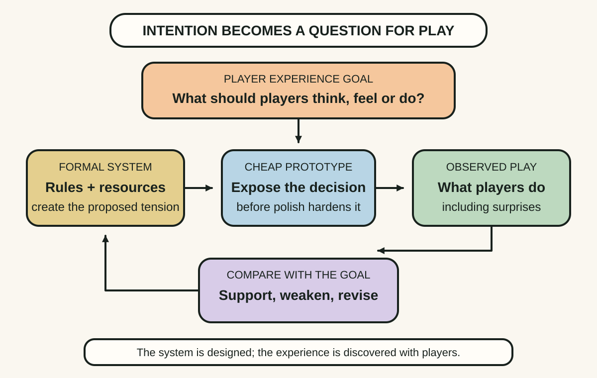
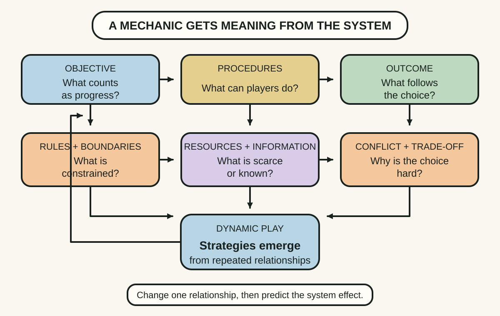
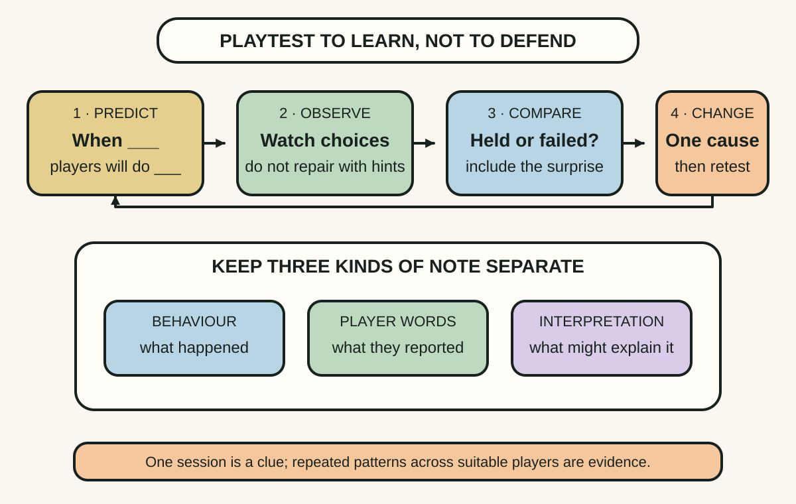

Daily lesson ·
Game Design Workshop
Design from an intended player experience, express it through interacting rules and discover the actual game through cheap prototypes, observed play and disciplined iteration.
Idea 1
Start with the experience, then test the system #
The idea
Fullerton's playcentric process begins with player experience goals: concise descriptions of what players should think, feel or do during play. A goal such as tense cooperation despite incomplete trust is different from a feature list. It gives the designer a criterion for choosing mechanics and a claim that can be tested with players.
The designer cannot directly manufacture an experience. The designer creates rules, procedures, resources and information; players interact with that system and produce an experience. Prototypes close the gap between intention and effect by showing whether the system reliably invites the targeted behaviour.

Why it matters
Teams can agree on a feature while imagining different player experiences. An experience goal makes the hidden disagreement discussable and lets a prototype answer a sharper question than whether the game is generally fun.
Apply it today
Choose one interaction and complete this sentence: players should feel or do ___ because they must choose between ___ and ___.
Name the one rule or information constraint most responsible for that tension and the behaviour you would watch for in a five-minute test.
Caveat or failure mode
A stated experience goal can become a story the team uses to reinterpret any result. Define observable signals before the test, include reactions that would weaken the goal and allow players to create valuable experiences the designer did not predict.
Idea 2
Tune relationships among formal elements #
The idea
Fullerton breaks a game's formal core into elements including players, objectives, procedures, rules, resources, conflict, boundaries and outcomes. The value of the vocabulary is relational. A resource is meaningful because rules make it scarce, procedures let players spend it and objectives make the timing consequential.
Dynamic play emerges from those interactions rather than from an isolated mechanic. Changing one rule can alter incentives, information, pacing and viable strategies elsewhere in the system. Designers therefore analyse loops, trade-offs and dominant patterns, not only whether each component works alone.

Why it matters
A feature can be individually elegant yet damage the game by removing a trade-off or creating one dominant strategy. A system map makes second-order consequences easier to anticipate and investigate.
Apply it today
Choose one recurring player decision and write its objective, allowed actions, resource costs, known information and outcome.
Change one relationship on paper and predict which behaviour, strategy or pacing effect should increase and which should decrease.
Caveat or failure mode
A formal map is a model, not the play experience. It can miss emotion, social meaning, accessibility, culture and improvisation. Use it to generate predictions, then let diverse players reveal relationships the diagram omitted.
Idea 3
Observe play before defending the design #
The idea
Fullerton treats playtesting as a structured design activity, not simply letting friends play and asking whether they liked it. The designer chooses a question, recruits relevant players, watches what they actually do and records moments of confusion, strategy, emotion and breakdown before explaining the intended solution.
Iteration compares the prediction with observed play, changes the prototype and tests again. Early prototypes should be cheap because their purpose is to make assumptions disposable. A useful result may invalidate a favourite mechanic before production effort turns it into a commitment.

Why it matters
Designers know the rules, intended strategy and unfinished context, so they cannot experience the prototype like a new player. Silent observation exposes gaps that an explanation would accidentally repair.
Apply it today
Write one prediction for a prototype in the form: when players encounter ___, most will do ___ because ___.
Define one contradicting observation, then prepare a note with separate columns for behaviour, player words and your interpretation.
Caveat or failure mode
One session can reflect an unrepresentative player, unclear facilitation or novelty. Observation is not self-interpreting, and changing one variable is not always possible in a connected system. Look for repeated patterns across suitable players and keep alternative explanations alive.
Knowledge check · 6 questions
Learning check
Answer all 6, then check your answers. Your first result stays in this browser, and each explanation appears after you check. A 3-question review can appear on the homepage from tomorrow.
6 questions not yet answered.
Today's experiment · 10 minutes
Run a paper playtest of one decision
- Write one experience goal and the player behaviour that would support it.
- Represent only the essential objective, choice, resource and consequence with paper, cards or a short verbal rule.
- Ask one person to make three decisions while you observe without explaining the preferred strategy.
- Record one prediction that held, one surprise and one rule relationship to change before the next test.
Observable result: You finish with observed behaviour and one evidence-linked iteration, not a general opinion about an imagined game.
Retrieval practice
Spaced recall
- From The Art of Game Design: how does changing the lens alter what a designer notices without automatically choosing the answer?
- From Continuous Discovery Habits: what separates evidence that reduces uncertainty from feedback collected without a decision in mind?
Verification
Source notes
These links support the attributed claims and edition details; applications and extensions are labelled in the lesson.
One-sentence takeaway